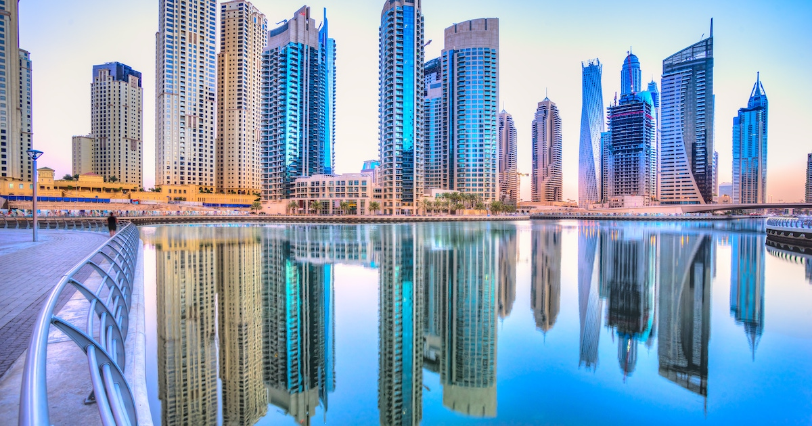

Dubai é o destino mais popular. Lisboa fica em 20º lugar

Pelo segundo ano consecutivo, o Dubai, nos Emirados Árabes Unidos, foi distinguido como o destino mais popular do mundo, seguida por Bali, na Indonésia, e Londres, no Reino Unido. Lisboa também surge nesta lista, mas apenas na 20.ª posição. A capital portuguesa é, aliás, duplamente distinguida nestes prémios, uma vez que aparece também no sétimo lugar na categoria de destinos gastronómicos. Mas já lá regressamos. Por agora fiquemo-nos pelo Dubai.
A sete horas de viagem de Portugal, o Dubai reúne um conjunto de ofertas e atividades para todos os bolsos e preferências ao longo de todo o ano, salienta o Departamento de Economia e Turismo do Dubai. O destaque, segundo a mesma fonte, vai para o AYA, novo parque de entretenimento imersivo que convida os visitantes a entrarem num universo de experiências interativas, em 12 zonas diferentes, cada uma com o seu tema. Mas também para o resort de luxo Atlantis The Royal, na Palm Island, que inaugura no próximo mês. Tem 43 andares, 231 apartamentos, 693 quartos, 102 suites e 99 piscinas, sendo que a estrela é a piscina infinita situada no 22.º andar com vista sobre o mar.
Este ano, os destinos Travellers' Choice abrangem seis subcategorias: destinos populares - esta que o Dubai venceu -, destinos trending, destinos gastronómicos, melhores lugares para esquiar, destinos naturais e melhores lugares culturais.
Lisboa surge em duas categorias: em 20.ª na lista de destinos populares e em 7.º no ranking de destinos gastronómicos, esta última ganha por Roma, em Itália. Creta, na Grécia, e Hanoi, no Vietname, ficaram na segunda e terceira posições, respetivamente. Cuba vence na categoria de destinos trending, seguida da vietnamita Hoi An e pela africana Maurícia, que também vence na categoria de destinos naturais. Fes, em Marrocos, foi eleito o melhor destino cultural, enquanto Whistler, no Canadá, o melhor destino para esquiar.